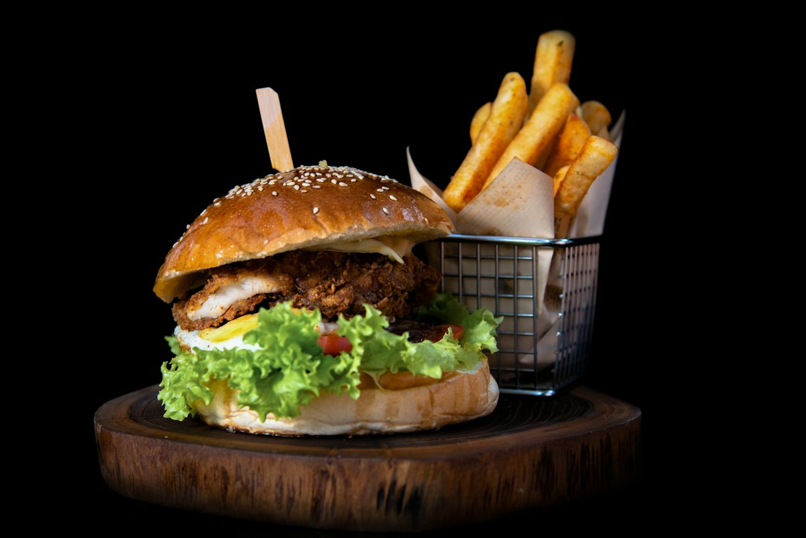
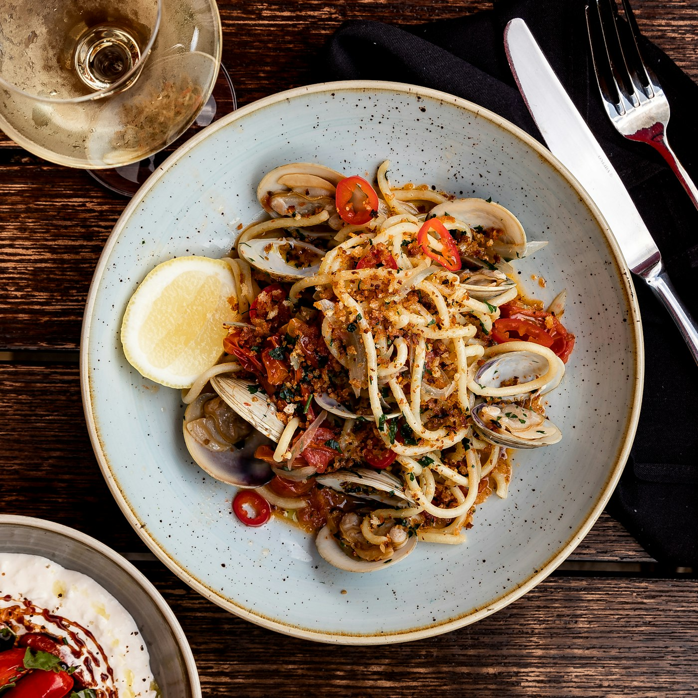

Bife de cuadril
Rump steak / biefstuk
- 200 g16,90
- 300 g21,90
- 400 g29,90
- 500 g36,90

Geldersekade 95 / Amsterdam
Argentijnse steaks die je per gewicht bestelt, Black Angus burgers van 200 gram en veertien pasta's. Op de hoek van de Geldersekade, een paar minuten lopen van de Nieuwmarkt.
De naam verklapt maar de helft. Bij Bazooka staan Argentijnse steaks, Black Angus burgers en ribs naast een volle Italiaanse pastakaart: van spaghetti aglio e olio tot frutti di mare met garnalen, mosselen, inktvis en vongole.
Steaks bestel je per gewicht. Een bife ancho begint bij 250 gram en houdt pas op bij 550. De burger met de naam van de zaak krijgt 200 gram Black Angus, spek, cheddar, basilicumpesto en een gebakken ei.
Kies je stuk en hoeveel gram je wilt. De prijs staat eronder.
Rump steak / biefstuk
Sirloin steak / entrecote
Tenderloin fillet / ossenhaas
Rib-eye

€ 2,95 per saus
Alle prijzen in euro. Op de kaart staan de gerechten in het Engels, met de Nederlandse omschrijving eronder.

Black Angus burgers van 200 gram. De Double gaat naar 400.

Veertien pasta's, van aglio e olio tot lasagne uit de oven.
Complete maaltijden, geserveerd met friet en salade.
Geserveerd met friet en salade.
Ook vegetarisch op de kaart: falafel, vegetarische empanadas, de vega burger en verschillende pasta's.
Reserveren kan online voor gezelschappen tot 20 personen. Met een grotere groep of een vraag? Bel of mail even.

| Maandag | 11:00 – 23:30 |
|---|---|
| Dinsdag | 11:00 – 23:30 |
| Woensdag | 11:00 – 23:30 |
| Donderdag | 11:00 – 23:30 |
| Vrijdag | 11:00 – 23:30 |
| Zaterdag | 11:00 – 23:30 |
| Zondag | 11:00 – 23:00 |
Laatste tafel om 22:30, op zondag om 22:00.
06 50 41 31 64
bazookasteakburger@gmail.com
Op de hoek van de Geldersekade, een paar minuten lopen van de Nieuwmarkt.